21，宜闯荡
我忘记父亲所说的话
我忘记母亲所说的话
整个城市充满了花
整个城市充满了雨
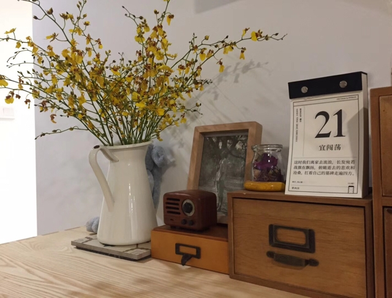
穿花过雨
在临北的福州
用力嗅出闽南之息
早春乔木茶 [1]
敞露相迎便自取自饮
麒麟弄无麒麟 [2]
吴馀桥疑吾 [3]
生死的一笔画
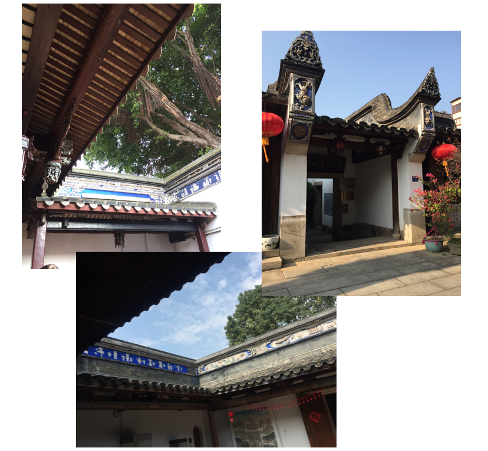
闽建筑装饰多工笔重彩墨
各处蓝绿斗拱和檐下彩绘可见
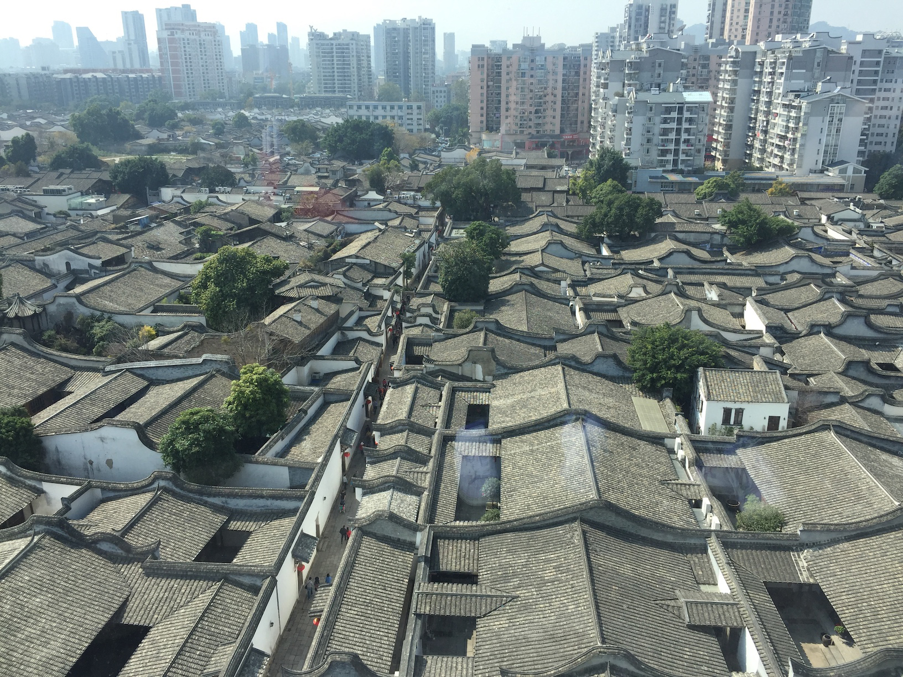
三坊七巷 [4] ：人和房子各自摩肩接踵，往日城市的窒息
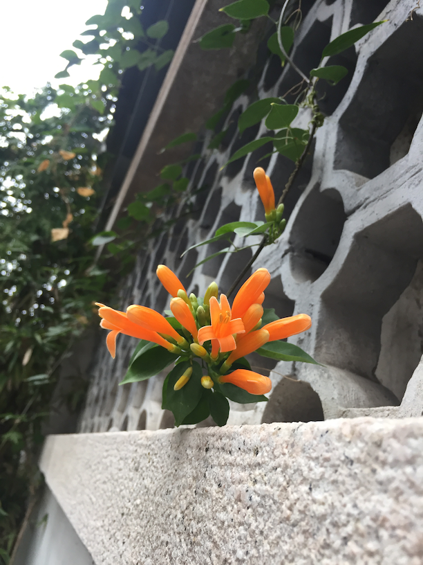
炮仗花应新年之景，或不可语冰
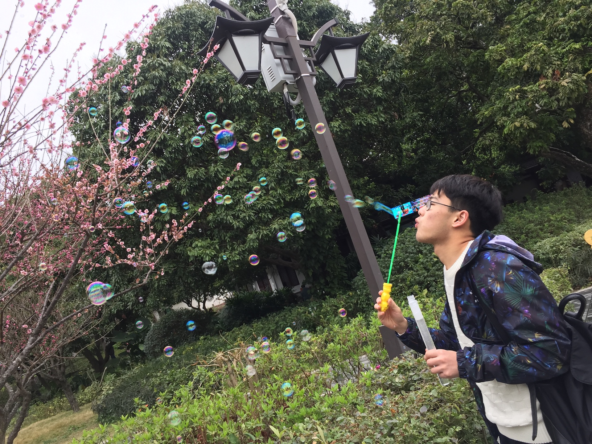
一路泡泡引群童相逐
拐卖小朋友的绝妙手段
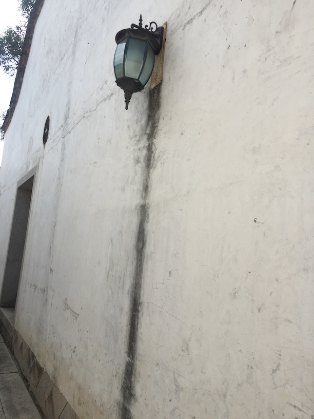
二维路灯的量子穿墙事件
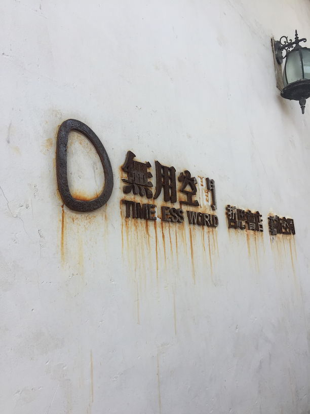
来自时间、氧气和水的嘲讽：哲思艺术，无用之用，真无用也。
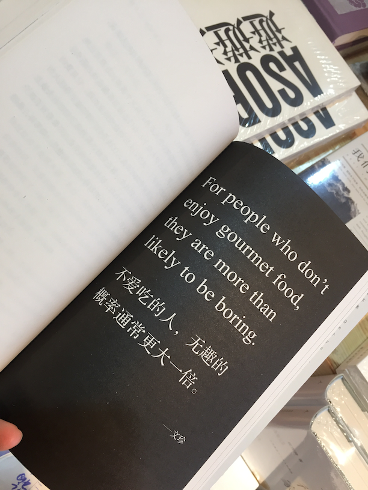
吃货趣味
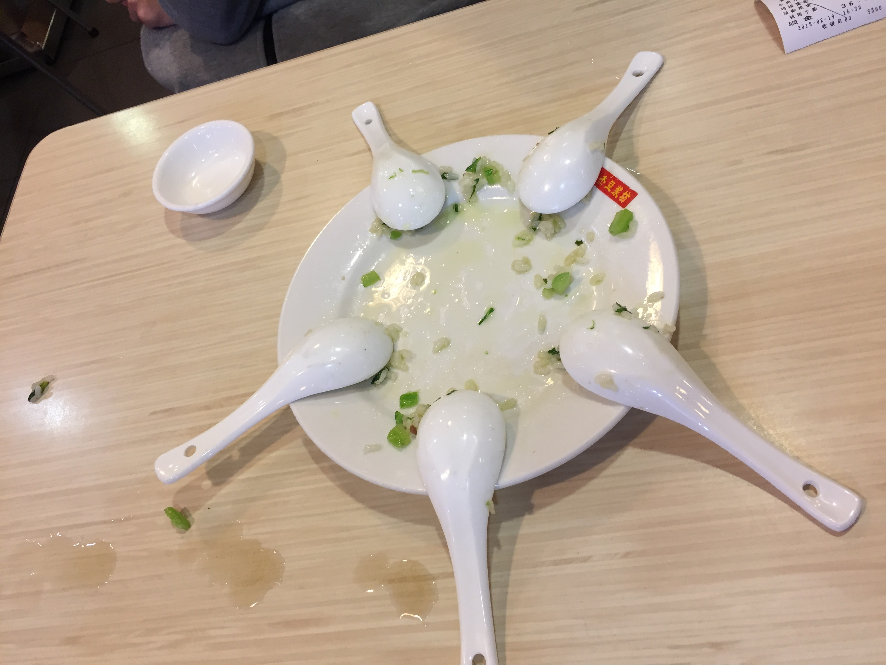
而饿最好吃 [5]
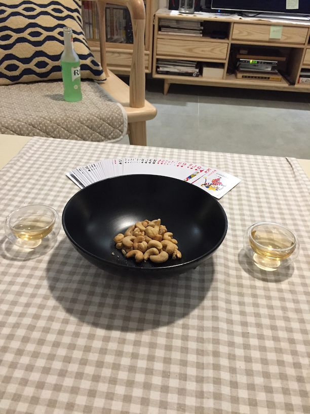
茶酒牌事是入夜小调

捕猫引发贵宾犬的不满
某相汪某无言
某时也是主权宣示 [6]
闽南味在地铁的报站音里
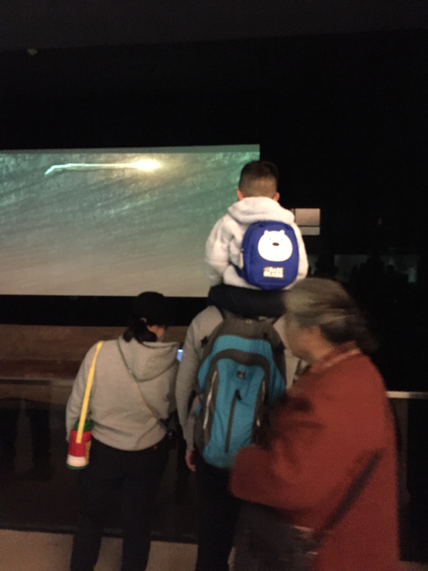
衣冠南渡
围观者之围的
是木棺一席悬葬 [7]
骑在父亲肩脖上的孩子的奶音：
爸爸
我们也会死吗
- 1.房主家餐桌上陈列的一饼茶，早春乔木，属云南七子饼，产自勐海茶厂。溯至周武王时期，“巴蜀之地有普茶，其状圆、曰：七子饼茶。”，七的来源取吉祥意，即“多子多福”。清香绕舌，返即回购之😋 ↩
- 2.炎日当头意兴阑珊时偶入一条小巷，名曰麒麟巷，牌匾上介绍道：“在安民巷北侧，宽1米，古有麒麟降临巷内的传说。因弄口西侧的墙壁上画有一个彩色的大麒麟而得名。”重振兴致独身进巷一探究竟，墙壁洁白如新安来麒麟😡，实名上诉建议改名乌有巷。 ↩
- 3.吴国第九任君主，因好奇姓名谷歌之，记载寥寥：强鸠夷卒，子余桥疑吾立。余桥疑吾卒，子柯卢立。——《吴太伯世家》 ↩
- 4.三坊七巷，昔日八姓入闽南渡蔽所，今日“不同城市同样风景”的商业古镇之一，观赏小贴士：可访林则徐，可膜，但望出门之时不止乎苟。 ↩
- 5.福州吃食没有留下足够的余味，形似味似的荔枝肉和醉排骨同上有些腻人，随手点的一盘干锅包菜吓人地辣上天，于是相册里只剩一盘排队高分餐厅饿得不行时偷溜去隔壁山寨快餐店点的光盘菜炒饭有些戏谑回忆了。 ↩
- 6.笼中猫和宠物狗的故事：清早醒来发现窗外的草地上窸窣作响，近看是一只猫在笼子里闹腾，以为是个猫窝，仔细看才发现笼子是用来捕野猫的，猫进去后笼门会掉下卡死只能从外面打开。猫挣扎数次无果。后一宠物狗被主人遛出来晨跑，闻声赶来嘲讽狂吠，但又不敢靠近（怕是吃过疯猫的亏）。猫不屑与狗对峙停止挣扎开始就地而眠（蔑视×1），狗不甘心被无视，开始叫得更欢并且试图靠近（然移动速度缓慢显得略怂），猫突然一动，狗就被吓得快速后退（进一退十之势……），猫更不屑甚至伸了个懒腰（蔑视×2）。 ↩
- 7.悬棺葬，中国古代葬式的一种。即人死后，亲属殓遗体入棺，将木棺悬置于插入悬崖绝壁的木桩上，或置于崖洞中、崖缝内，或半悬于崖外。往往陡峭高危，下临深溪，无从攀登。其俗流行于南方少数民族地区，悬置越高，表示对死者越是尊敬。 ↩